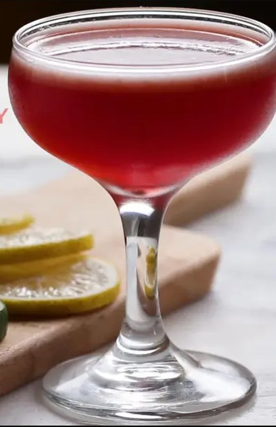

Tiramisu

Description
Fruity cocktail with Tequilla. A wild combination between a margirta and a cosmopolitian.
Ingredients
- ½ cup ice(70 g)
- 1 tablespoon raspberry jam
- 2 tablespoons lime juice
- 2 fl oz tequila(60 mL)
- lime round, for garnish
Steps
- In a cocktail shaker, combine the ice, raspberry jam, lime juice, and tequila.
- Cover with the lid and shake vigorously for 30 seconds.
- Strain into desired serving glass.
- Garnish with a lime round.